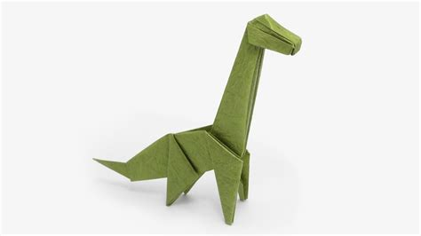
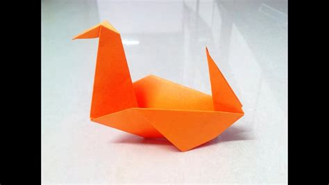
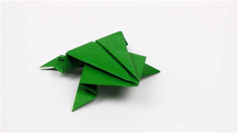
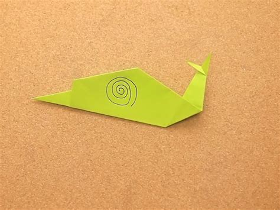

Origami Designs
Know More
Follow Us
My Creations




Interesting Facts About Origami
-
The origin
It came from Japan, not China. But Chinese people influenced al lot of the concept of paper folding. You have to know that paper was invented from China for the first time.
-
Who brought origami to Japan?
The Buddhist monks introduced the origami art to Japan. The credit for the birthplace of origami was taken by Japanese people. But you can find many parts of oriental countries such as China like to do origami. This art is very popular among kids and adults.
-
The largest origami
Many people think that origami must involve with small paper. It is not true. In 1999, the largest crane from paper was created. It was made inside a football stadium with the weight of 1,750 pounds and height of 215 feet.
-
Akira Naito
Akira Naito was a Japanese person who created the smallest crane paper. He folded a 0.1-by-0.1-mm square of paper to make this crane paper. It is not easy to do it because Akira had to use a pair of tweezers and a microscope.
-
50th anniversary of Hiroshima
There were 25,000 paper cranes created during the 50th anniversary of Hiroshima bombing in Japan. It broke the record as the largest number of origami cranes ever made. People placed the origami cranes on the memorial place of the city.
-
The oldest origami illustration design
The oldest origami illustration design was traced back in 1490. Johannes di Sacrobesco created the illustration in Venice. He illustrated paper boats floating on water.
-
Christian Dior
Christian Dior was inspired by origami when he created his 2007 Haute Couture collection. Actually this art has inspired a lot of sectors such as fashion, architecture and food. If you visit Japan, you can find a lot of buildings created based on origami style.
-
Popularity
The art of origami also influenced the people in Spain. The moors brought the art in 1100 AD to Spain. But the Spanish people did not use it as an art. They used the origami to understand the geometrical and mathematical concepts.
-
Paper
The popular belief states that origami is created from paper. Actually you can have it made from foil, food, or even coarse cloth.
-
Books and museums
If you want to know the collection of origami masterpieces, you can check them on the museums and books in America and Japan.
The Origami art came to America and England in 1900. Today many American and English students learned origami at school.